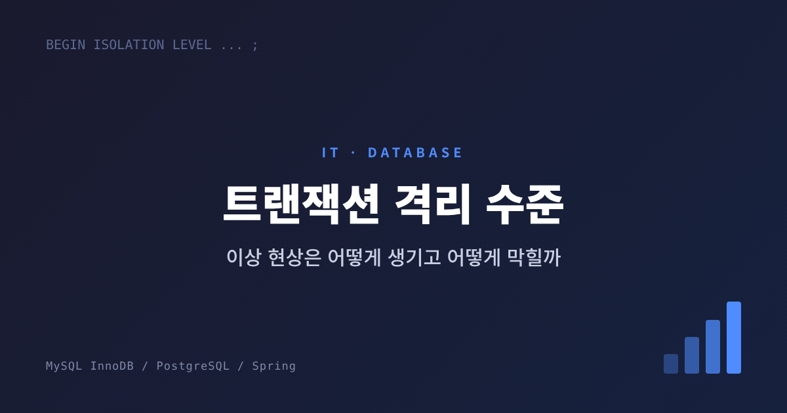
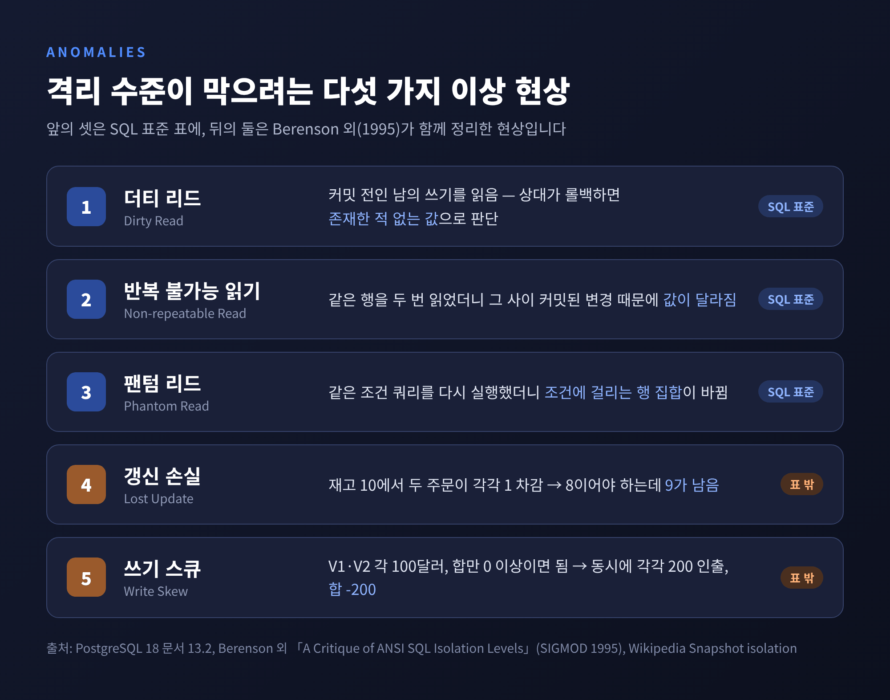
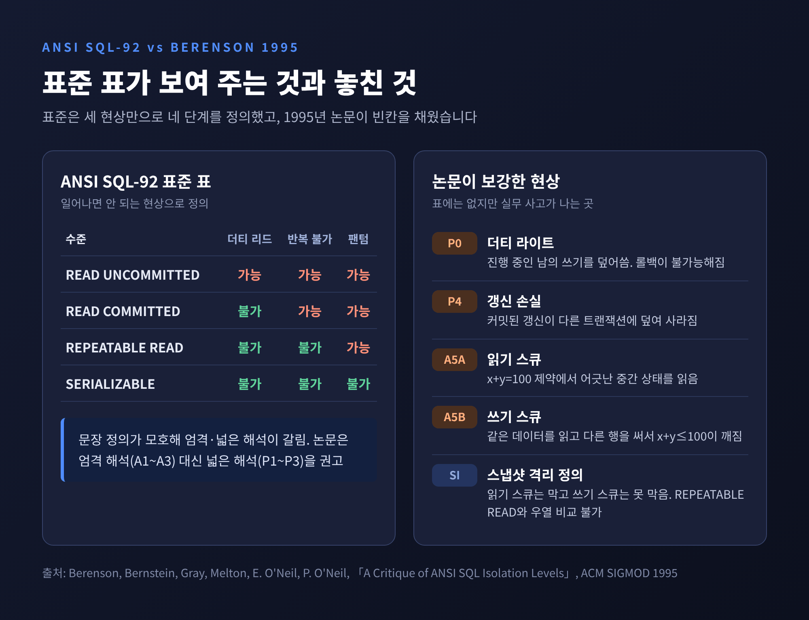
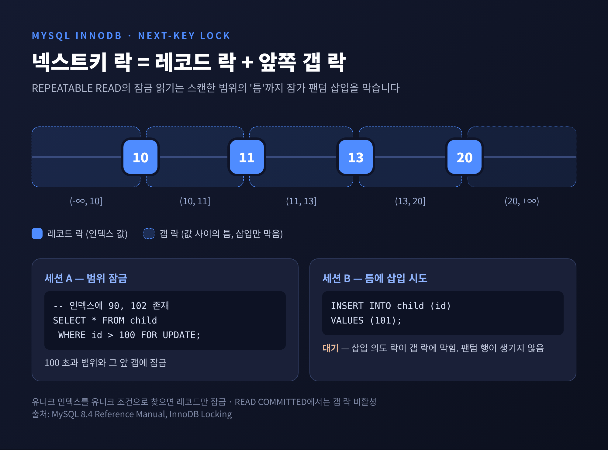
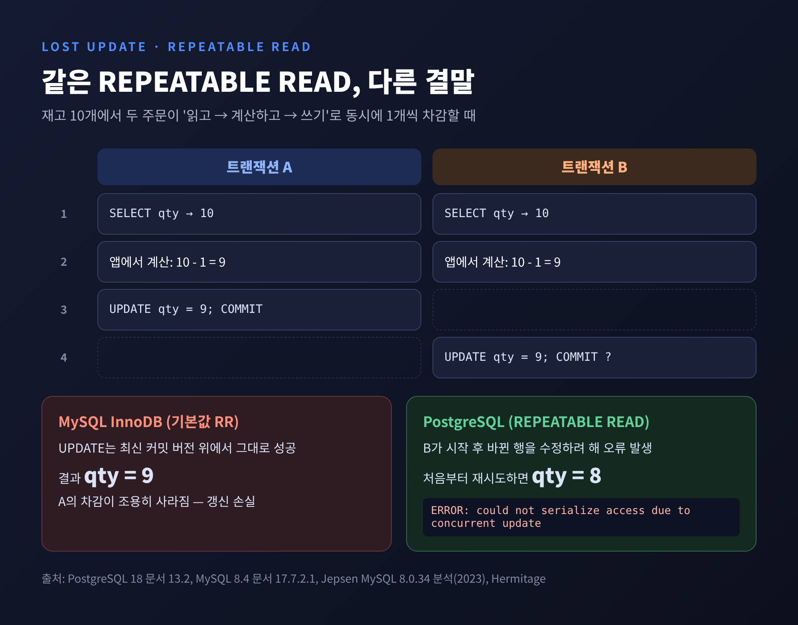
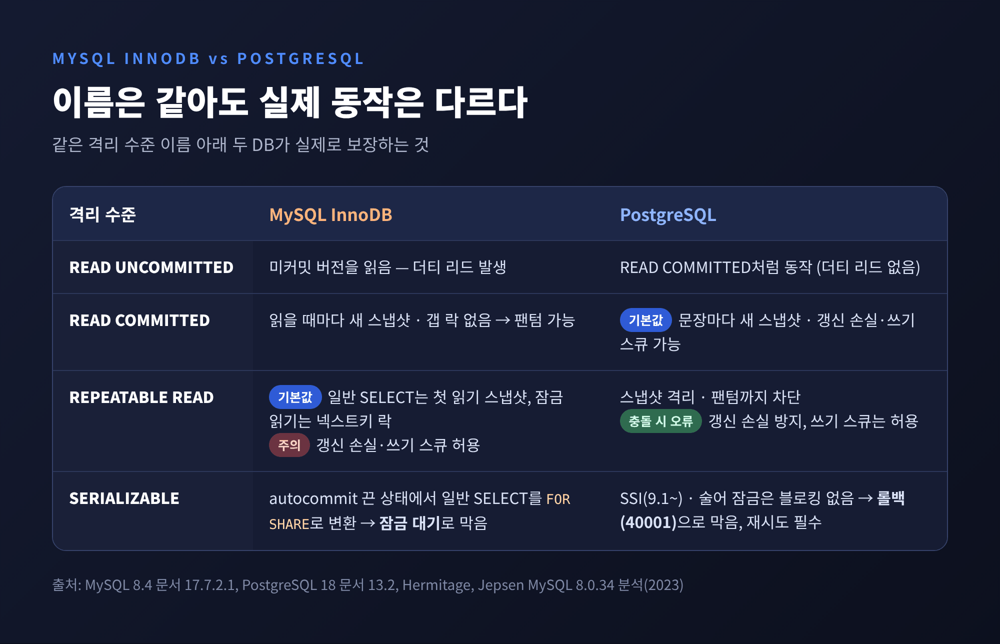
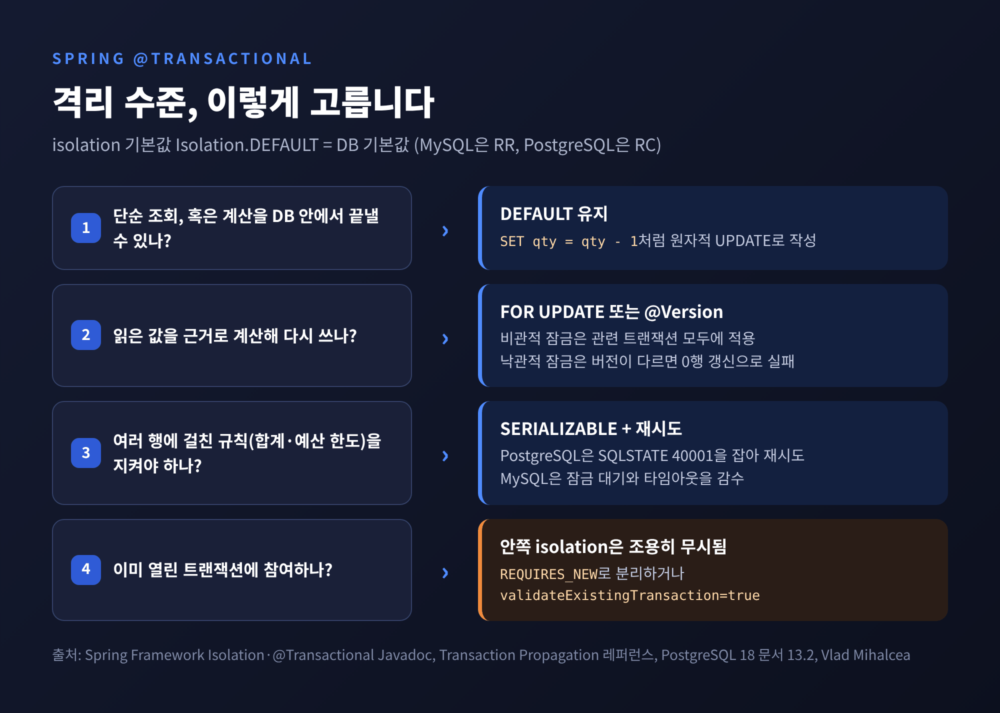

트랜잭션 격리 수준 — 이상 현상은 어떻게 생기고 어떻게 막힐까

이번 글에서는 데이터베이스 트랜잭션 격리 수준을 정리해 보겠습니다. 더티 리드부터 쓰기 스큐까지 다섯 가지 이상 현상이 어디서 생기고 무엇이 막는지, 그리고 MySQL과 PostgreSQL이 같은 이름 아래 얼마나 다르게 움직이는지를 따라갑니다. MVCC 원리는 지난 글에서 다뤘으니, 여기서는 "어떤 수준에서 무엇이 보장되는가"에만 집중하겠습니다.
먼저 결론부터 적어 둡니다.
- 격리 수준의 이름은 보장의 내용을 정확히 말해 주지 않습니다. 같은 REPEATABLE READ라도 PostgreSQL은 갱신 손실을 오류로 막고, MySQL InnoDB는 조용히 덮어씁니다.
- 기본값부터 다릅니다. InnoDB는 REPEATABLE READ, PostgreSQL은 READ COMMITTED입니다.
- 격리 수준만으로 해결되지 않는 문제가 있습니다. 갱신 손실과 쓰기 스큐는 잠금 읽기, 낙관적 잠금, 혹은 SERIALIZABLE과 재시도 로직으로 따로 다뤄야 합니다.
■ 다섯 가지 이상 현상, 한 번에 보기
격리 수준은 결국 "동시에 실행되는 트랜잭션끼리 무엇을 보고 무엇을 덮어쓸 수 있는가"의 약속입니다. 그 약속이 느슨할 때 생기는 문제를 이상 현상이라고 부릅니다. PostgreSQL 공식 문서와 1995년 Berenson 외의 논문을 기준으로 정리하면 다음과 같습니다.
더티 리드(Dirty Read). 아직 커밋되지 않은 다른 트랜잭션의 쓰기를 읽는 현상입니다. 상대가 롤백하면, 존재한 적 없는 값을 근거로 판단한 셈이 됩니다.
반복 불가능 읽기(Non-repeatable Read). 같은 행을 두 번 읽었는데, 그 사이 다른 트랜잭션이 값을 바꾸고 커밋해 결과가 달라지는 현상입니다.
팬텀 리드(Phantom Read). 같은 조건의 쿼리를 다시 실행했더니 조건을 만족하는 행의 집합 자체가 달라지는 현상입니다. 행 하나가 아니라 "조건에 걸리는 범위"가 흔들린다는 점이 반복 불가능 읽기와 다릅니다.
갱신 손실(Lost Update). 두 트랜잭션이 같은 값을 읽고 각자 계산해 쓰면, 먼저 커밋한 쪽의 변경이 사라집니다. 재고 10개에서 두 주문이 동시에 1개씩 빼면 8이 되어야 하는데 9가 남는 식입니다.
쓰기 스큐(Write Skew). 두 트랜잭션이 같은 데이터를 읽고, 서로 다른 행을 씁니다. 각자는 규칙을 지켰는데 합쳐 놓으면 규칙이 깨집니다. 위키백과의 예가 직관적입니다. 두 계좌 V1, V2에 100달러씩 있고 "합만 음수가 아니면 된다"는 규칙이 있을 때, V1과 V2에서 동시에 200달러씩 빼면 둘 다 커밋되어 합이 -200달러가 됩니다.

앞의 세 가지는 SQL 표준에 이름이 올라 있습니다. 뒤의 두 가지는 표준 표에 없습니다. 실무 사고는 오히려 이 뒤쪽 두 가지에서 자주 터집니다.
■ ANSI SQL-92의 네 단계와, 그 표가 놓친 것
SQL-92 표준은 격리 수준을 "어떤 현상이 일어나서는 안 되는가"로 정의합니다.
| 격리 수준 | 더티 리드 | 반복 불가능 읽기 | 팬텀 리드 |
|---|---|---|---|
| READ UNCOMMITTED | 가능 | 가능 | 가능 |
| READ COMMITTED | 불가 | 가능 | 가능 |
| REPEATABLE READ | 불가 | 불가 | 가능 |
| SERIALIZABLE | 불가 | 불가 | 불가 |
스프링의 Isolation enum 문서도 이 정의를 그대로 옮겨 적고 있습니다.
그래서 많은 개발자가 이 표를 격리 수준의 전부로 기억합니다.
1995년 ACM SIGMOD에 실린 「A Critique of ANSI SQL Isolation Levels」는 이 표에 정면으로 문제를 제기했습니다. 저자는 Hal Berenson, Phil Bernstein, Jim Gray, Jim Melton, Elizabeth O'Neil, Patrick O'Neil입니다. 요지는 세 가지로 정리됩니다.
첫째, 정의가 모호합니다. 표준은 현상을 영어 문장으로 설명했고, 이것을 엄격하게 읽을 수도 넓게 읽을 수도 있습니다. 논문은 엄격한 해석(A1~A3)만 금지해서는 직렬성이 보장되지 않는다는 예를 듭니다. T1이 x에서 y로 40을 옮기는 도중, T2가 옮기기 전의 y와 옮긴 뒤의 x를 읽어 합이 60이라고 판단하고 커밋하는 이력입니다. T1은 결국 정상 커밋하므로 "롤백된 값을 읽었다"는 엄격한 정의에는 걸리지 않습니다. 그래서 논문은 넓은 해석(P1~P3)으로 바꿔야 한다고 권고합니다.
둘째, 빠진 현상이 있습니다. 진행 중인 남의 쓰기를 덮어쓰는 더티 라이트(P0)는 표에 없습니다. 롤백을 하려면 반드시 막아야 하는 현상인데도 그렇습니다. 갱신 손실(P4), 읽기 스큐(A5A), 쓰기 스큐(A5B)도 이 논문이 함께 정리한 현상입니다.
셋째, 다중 버전 방식을 설명하지 못합니다. 논문은 '스냅샷 격리(Snapshot Isolation)'를 정의했습니다. 트랜잭션 시작 시점의 커밋된 스냅샷을 읽고, 쓰기 집합이 그 사이 커밋된 다른 트랜잭션과 겹치지 않을 때만 커밋하는 방식입니다(먼저 커밋한 쪽이 이깁니다). 스냅샷 격리는 읽기 스큐는 막지만 쓰기 스큐는 막지 못합니다. READ COMMITTED보다는 강하고 SERIALIZABLE보다는 약하며, REPEATABLE READ와는 우열을 가릴 수 없다는 것이 논문의 결론입니다.

이 문제의식은 지금도 유효합니다. Martin Kleppmann은 2014년 격리 수준 테스트 프로젝트 Hermitage를 공개하며, 격리 수준이 "구현 세부로 정의된, 매우 새는 추상화"라고 표현했습니다. PostgreSQL, MySQL, SQL Server 모두 'repeatable read'를 제공하지만 각각 의미가 다르다는 지적입니다.
■ MySQL InnoDB — 기본값 REPEATABLE READ와 넥스트키 락
InnoDB의 기본 격리 수준은 REPEATABLE READ입니다. 이 수준에서 InnoDB는 두 가지 얼굴을 가집니다.
일반 SELECT는 스냅샷을 읽습니다. 공식 문서에 따르면 같은 트랜잭션 안의 일관된 읽기는 "첫 번째 읽기가 만든 스냅샷"을 봅니다. 그래서 일반 SELECT끼리는 반복 불가능 읽기도, 팬텀도 보이지 않습니다.
잠금 문장은 잠금으로 막습니다. SELECT ... FOR UPDATE, FOR SHARE, UPDATE, DELETE는 스캔한 인덱스 범위에 넥스트키 락을 겁니다.
넥스트키 락은 인덱스 레코드 자체의 잠금과 그 앞 간격(갭)의 잠금을 합친 것입니다.
인덱스에 10, 11, 13, 20이 있다면 잠금 단위는 (-∞, 10], (10, 11], (11, 13], (13, 20], (20, +∞) 구간이 됩니다.
문서 표현으로는 "검색과 인덱스 스캔에 넥스트키 락을 사용해 팬텀 행을 막는다"입니다.
예를 들어 인덱스에 90과 102가 있고, 한 세션이 WHERE id > 100 FOR UPDATE로 범위를 잡았다고 하겠습니다.
다른 세션의 INSERT ... VALUES (101)은 그 간격에 막혀 대기합니다.
표준 표에서는 REPEATABLE READ에서 팬텀이 '가능'하지만, InnoDB는 잠금 읽기에서 이 구멍을 잠금으로 메웁니다.
단, 유니크 인덱스를 유니크 조건으로 찾을 때는 찾은 레코드 하나만 잠그고 갭은 잠그지 않습니다.

문제는 두 얼굴이 섞일 때입니다. InnoDB의 UPDATE는 스냅샷이 아니라 최신 커밋 버전을 대상으로 동작합니다. 그래서 일반 SELECT로 재고 10을 읽고, 애플리케이션에서 9를 계산해 UPDATE하면, 그 사이 다른 트랜잭션이 커밋한 9를 그대로 덮어씁니다. 갱신 손실입니다.
MySQL 문서도 이 점을 경고합니다. 하나의 REPEATABLE READ 트랜잭션 안에서 잠금 문장과 비잠금 SELECT를 섞는 것은 권장하지 않으며, "보통 그런 경우 원하는 것은 SERIALIZABLE"이라고 적고 있습니다.
독립 검증도 같은 결론입니다. Hermitage 표는 InnoDB REPEATABLE READ가 갱신 손실과 쓰기 스큐를 막지 못한다고 정리합니다. 2023년 12월 Jepsen의 MySQL 8.0.34 분석은 더 직설적입니다. 갱신 손실이 정상 단일 노드에서도 일상적으로 발생했고, "MySQL Repeatable Read 트랜잭션은 값을 읽은 뒤 안전하게 쓸 수 없다"고 결론 냈습니다. 60초짜리 단일 노드 테스트 한 번에서 읽기 스큐가 244건 관측되기도 했습니다. Jepsen은 InnoDB REPEATABLE READ가 스냅샷 격리도 만족하지 않는다고 판단했습니다.
나머지 수준도 짧게 정리합니다.
- READ COMMITTED: 같은 트랜잭션 안에서도 읽을 때마다 새 스냅샷을 만듭니다. 갭 락을 쓰지 않으므로(외래키·중복키 검사 제외) 팬텀이 생길 수 있습니다. 대신 조건에 맞지 않는 행의 잠금을 바로 풀어 동시성이 좋아집니다. 바이너리 로그는 행 기반만 지원합니다.
- READ UNCOMMITTED: 미커밋 버전을 읽을 수 있어 더티 리드가 납니다.
- SERIALIZABLE: REPEATABLE READ와 같되, autocommit이 꺼져 있으면 모든 일반 SELECT를
SELECT ... FOR SHARE로 바꿉니다. 읽은 범위에 공유 잠금이 걸리므로 쓰기 스큐도 블로킹으로 막힙니다. Jepsen 테스트에서도 단일 노드 SERIALIZABLE은 직렬성을 만족하는 것으로 보였습니다.
■ PostgreSQL — 기본값 READ COMMITTED와 SSI
PostgreSQL의 기본 격리 수준은 READ COMMITTED입니다. 네 가지 수준을 모두 받아들이지만, READ UNCOMMITTED를 지정해도 READ COMMITTED로 동작합니다. 공식 문서는 이것이 다중 버전 구조에 표준 수준을 대응시키는 "유일하게 합리적인 방법"이라고 설명합니다.
READ COMMITTED는 문장 단위 스냅샷입니다. 각 문장은 그 문장이 시작될 때까지 커밋된 데이터만 봅니다. 따라서 한 트랜잭션 안에서도 두 번째 SELECT는 다른 값을 볼 수 있습니다.
REPEATABLE READ는 트랜잭션 단위 스냅샷이며, 학계 용어로 스냅샷 격리입니다. 첫 번째 문장이 시작될 때 스냅샷이 고정됩니다. 문서는 이것이 "표준이 요구하는 것보다 강한 보장"이라고 밝힙니다. 팬텀까지 막고, 남는 것은 직렬화 이상뿐입니다.
여기서 MySQL과 결정적으로 갈립니다. PostgreSQL REPEATABLE READ는 내가 시작한 뒤 다른 트랜잭션이 바꾼 행을 수정하려 하면 덮어쓰지 않고 오류를 냅니다.
ERROR: could not serialize access due to concurrent update
문서의 지침은 분명합니다. 현재 트랜잭션을 중단하고 처음부터 다시 실행하라는 것입니다. 읽기 전용 트랜잭션은 이런 충돌이 일어나지 않습니다.

SERIALIZABLE은 9.1부터 SSI(Serializable Snapshot Isolation)로 구현됩니다. 2008년 SIGMOD 최우수 논문인 Cahill, Röhm, Fekete의 연구가 바탕입니다. 동작은 REPEATABLE READ와 같되, 트랜잭션 사이의 읽기-쓰기 의존을 추적해 어떤 직렬 순서로도 설명되지 않는 "위험한 구조"가 보이면 하나를 롤백합니다.
공식 문서의 예를 보겠습니다. 테이블에 class 1의 값 10, 20과 class 2의 값 100, 200이 있습니다. 트랜잭션 A는 class 1의 합 30을 class 2 행으로 넣고, B는 class 2의 합 300을 class 1 행으로 넣습니다. REPEATABLE READ라면 둘 다 커밋됩니다. SERIALIZABLE이라면 하나만 커밋되고, 나머지는 이 오류로 롤백됩니다.
ERROR: could not serialize access due to read/write dependencies among transactions
눈여겨볼 점은 SSI의 술어 잠금(SIReadLock)이 아무것도 블로킹하지 않는다는 것입니다.
데드락의 원인도 되지 않습니다.
MySQL SERIALIZABLE이 공유 잠금으로 기다리게 만든다면, PostgreSQL SERIALIZABLE은 일단 진행시킨 뒤 문제가 보이면 실패시킵니다.
그래서 직렬화 실패(SQLSTATE 40001)를 일반적인 방식으로 재시도하는 장치가 반드시 필요합니다.
문서는 SERIALIZABLE을 쓸 때의 요령도 함께 적어 둡니다.
가능하면 READ ONLY로 선언하고, 커넥션 풀로 활성 연결 수를 조절하며, 트랜잭션을 필요 이상 키우지 말라는 것입니다.
'idle in transaction' 상태로 방치하지 말고, 더 이상 필요 없는 SELECT FOR UPDATE는 걷어내라는 조언도 있습니다.
순차 스캔은 테이블 단위 술어 잠금을 만들어 실패율을 높일 수 있다는 점도 기억할 만합니다.

■ 스프링 @Transactional(isolation=...) 실무 선택 기준
이제 애플리케이션 쪽으로 넘어오겠습니다.
스프링의 isolation 속성 기본값은 Isolation.DEFAULT이고, 이는 "기반 데이터스토어의 기본 격리 수준"을 뜻합니다.
즉 같은 코드가 MySQL에서는 REPEATABLE READ로, PostgreSQL에서는 READ COMMITTED로 실행됩니다.
몇 가지 기준을 정리하면 이렇습니다.
1. 대부분의 조회·단순 쓰기는 DEFAULT로 충분합니다.
문제는 격리 수준이 아니라 "읽고 → 계산하고 → 쓰는" 패턴입니다.
가능하면 UPDATE stock SET qty = qty - 1 WHERE id = ?처럼 계산을 DB 안으로 넣으시길 권합니다.
2. 읽은 값을 근거로 쓰는 로직에는 명시적 수단을 붙입니다.
비관적 잠금(SELECT ... FOR UPDATE)은 단순하지만, 관련된 트랜잭션 모두 잠금 읽기를 써야 효과가 있습니다.
낙관적 잠금은 JPA의 @Version 같은 버전 컬럼을 UPDATE의 WHERE에 넣어, 그 사이 누가 바꿨다면 0행 갱신으로 실패시키는 방식입니다.
Vlad Mihalcea는 이것이 여러 트랜잭션에 걸친 긴 작업에서도 통하는 유일한 방법이라고 설명합니다.
MySQL에서 격리 수준만 REPEATABLE READ로 올려 두고 갱신 손실이 막혔다고 기대해서는 안 됩니다.
3. 여러 행에 걸친 불변식은 SERIALIZABLE을 검토합니다.
"두 계좌의 합은 음수가 될 수 없다", "급여 총액은 예산 이하" 같은 규칙은 쓰기 스큐의 전형입니다.
PostgreSQL이라면 해당 메서드만 @Transactional(isolation = Isolation.SERIALIZABLE)로 올리고, 40001 실패를 잡아 재시도하는 구조를 함께 둡니다.
MySQL SERIALIZABLE은 롤백 대신 잠금 대기로 막기 때문에, 대기 시간과 잠금 타임아웃을 감수해야 합니다.
4. 전파 속성을 확인합니다.
스프링 문서에 따르면 isolation은 새로 시작되는 트랜잭션에만 적용됩니다.
이미 열린 트랜잭션에 REQUIRED로 참여하면, 안쪽 메서드에 적은 격리 수준은 조용히 무시됩니다.
꼭 다른 수준이 필요하면 REQUIRES_NEW로 독립 트랜잭션을 열거나, 트랜잭션 매니저의 validateExistingTransaction을 true로 두어 불일치를 오류로 드러내는 편이 안전합니다.

■ 정리하며
예전엔 격리 수준을 네 칸짜리 표 하나로 외웠습니다. 지금 돌아보면 그 표는 출발점일 뿐이었습니다.
표준은 "일어나면 안 되는 것"만 정했고, 각 DB는 그 위에 서로 다른 구현을 올렸습니다. InnoDB는 넥스트키 락으로 팬텀을 막지만 갱신 손실에는 관대합니다. PostgreSQL은 기본값이 낮은 대신, REPEATABLE READ와 SERIALIZABLE에서 충돌을 오류로 드러냅니다. 어느 쪽이 낫다고 단정하기는 어렵습니다. 블로킹으로 기다리는 비용과, 실패 후 재시도하는 비용 중 어느 것을 감당할지의 선택에 가깝습니다.
결국 남는 것은 하나입니다. 격리 수준의 이름이 아니라, 우리 DB가 그 이름으로 실제 무엇을 막는지 확인해야 합니다.
지금 운영 중인 서비스의 재고 차감 코드를 다시 열어 보신다면, 그것만으로도 이 글은 충분히 제 몫을 한 셈입니다.
#트랜잭션격리수준 #데이터베이스 #MySQL #PostgreSQL #InnoDB #SSI #갱신손실 #쓰기스큐 #스프링트랜잭션 #백엔드개발